Introduction
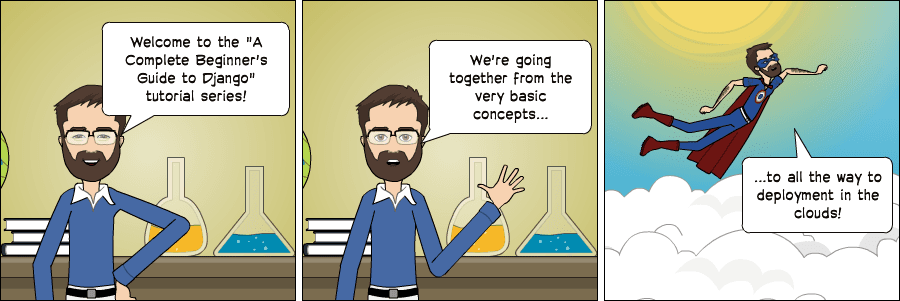
Today I’m starting a new tutorial series about Django fundamentals. It’s a complete beginner’s guide to start learning Django. The material is divided into seven parts. We’re going to explore all the basic concepts in great detail, from installation, preparation of the development environment, models, views, templates, URLs to more advanced topics such as migrations, testing, and deployment.
I wanted to do something different. A tutorial that would be easy to follow, informative and fun to read. That was when I came up with the idea to create some comics along the text to illustrate some concepts and scenarios. I hope you enjoy the reading!
But before we start…
Back when I worked as a substitute professor in a university, I used to teach an introduction to web development discipline for the newcomer students in the Computer Science course. And I would always start new classes with this Confucius quote:
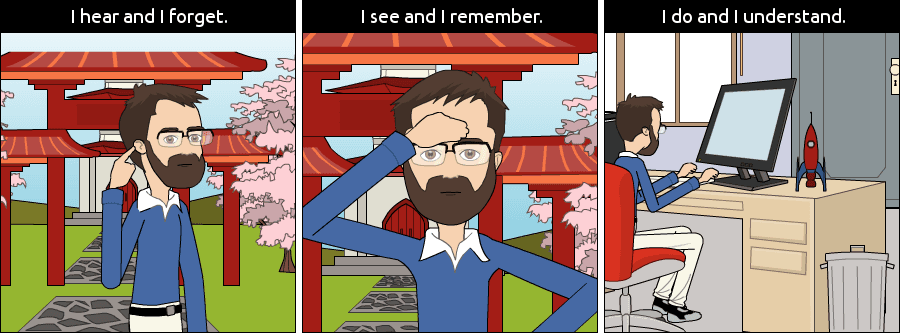
So, hands on! Don’t just read the tutorials. Let’s do it together! You will learn much more by doing and practicing.
Why Django?
Django is a Web framework written in Python. A Web framework is a software that supports the development of dynamic Web sites, applications, and services. It provides a set of tools and functionalities that solves many common problems associated with Web development, such as security features, database access, sessions, template processing, URL routing, internationalization, localization, and much more.
Using a Web framework, such as Django, enables us to develop secure and reliable Web applications very quickly in a standardized way, without having to reinvent the wheel.
So, what’s so special about Django? For starters, it’s a Python Web framework, which means you can benefit from wide a range of open source libraries out there. The Python Package Index repository hosts over 116K packages (as per 6 of Sep. 2017). If you need to solve a specific problem, the chances are someone has already implemented a library for it.
Django is one of the most popular Web frameworks written in Python. It’s definitely the most complete, offering a wide range of features out-of-the-box, such as a standalone Web server for development and testing, caching, middleware system, ORM, template engine, form processing, interface with Python’s unit testing tools. Django also comes with battery included, offering built-in applications such as an authentication system, an administrative interface with automatically generated pages for CRUD operations, generation of syndication feeds (RSS/Atom), sitemaps. There’s even a Geographic Information System (GIS) framework built within Django.
The development of Django is supported by the Django Software Foundation, and it’s sponsored by companies like JetBrains and Instagram. Django has also been around for quite some time now. It’s under active development for more than 12 years now, proving to be a mature, reliable and secure Web framework.
Who’s Using Django?
It’s good to know who is using Django out there, so to have an idea what you can do with it. Among the biggest Web sites using Django we have: Instagram, Disqus, Mozilla, Bitbucket, Last.fm, National Geographic.
For more examples you can see the Django Sites database, they offer a list of over 5K Django-powered Web sites.
By the way, last year, in the Django Under The Hood 2016 conference, Carl Meyer, a Django core developer, and Instagram employee, gave a talk on how Instagram use Django at scale and how it supported their growth. It’s a one hour talk, but if you are interested in learning more, it was an entertaining talk.
Installation
The first thing we need to do is install some programs on our machine so to be able to start playing with Django. The basic setup consists of installing Python, Virtualenv, and Django.
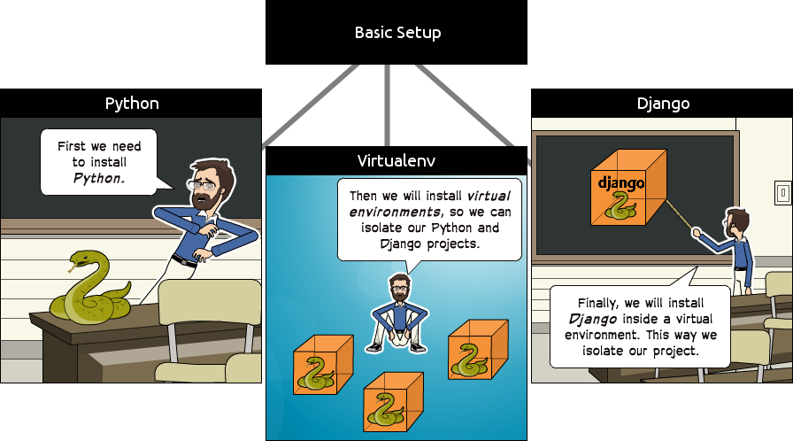
Using virtual environments is not mandatory, but it’s highly recommended. If you are just getting started, it’s better to start with the right foot.
When developing Web sites or Web projects with Django, it’s very common to have to install external libraries to support the development. Using virtual environments, each project you develop will have its isolated environment. So the dependencies won’t clash. It also allows you to maintain in your local machine projects that run on different Django versions.
It’s very straightforward to use it, you will see!
Installing Python 3.6.2
The first thing we want to do is install the latest Python distribution, which is Python 3.6.2. At least it was, by the time I was writing this tutorial. If there’s a newer version out there, go with it. The next steps should remain more or less the same.
We are going to use Python 3 because the most important Python libraries have already been ported to Python 3 and also the next major Django version (2.x) won’t support Python 2 anymore. So Python 3 is the way to go.
The best way to go is with Homebrew. If you don’t have it installed on your Mac yet, run the following command in the Terminal:
/usr/bin/ruby -e "$(curl -fsSL https://raw.githubusercontent.com/Homebrew/install/master/install)"If you don’t have the Command Line Tools installed, the Homebrew installation might take a little bit longer. But it will take care of everything for you, so no worries. Just sit back and wait until the installation completes.
You will know when the installation completes when you see the following message:
==> Installation successful!
==> Homebrew has enabled anonymous aggregate user behaviour analytics.
Read the analytics documentation (and how to opt-out) here:
https://docs.brew.sh/Analytics.html
==> Next steps:
- Run `brew help` to get started
- Further documentation:
https://docs.brew.shTo install Python 3, run the command below:
brew install python3Since macOS already ships with Python 2 installed, after you install Python 3, you will have both versions available.
To run Python 2, use the python command in the Terminal. For Python 3, use python3 instead.
We can test the installation by typing in the Terminal:
python3 --version
Python 3.6.2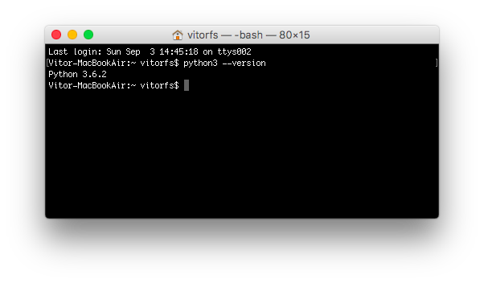
Go to www.python.org click on the Python 3.6.2 download page, scroll down until you see the download files listed below:
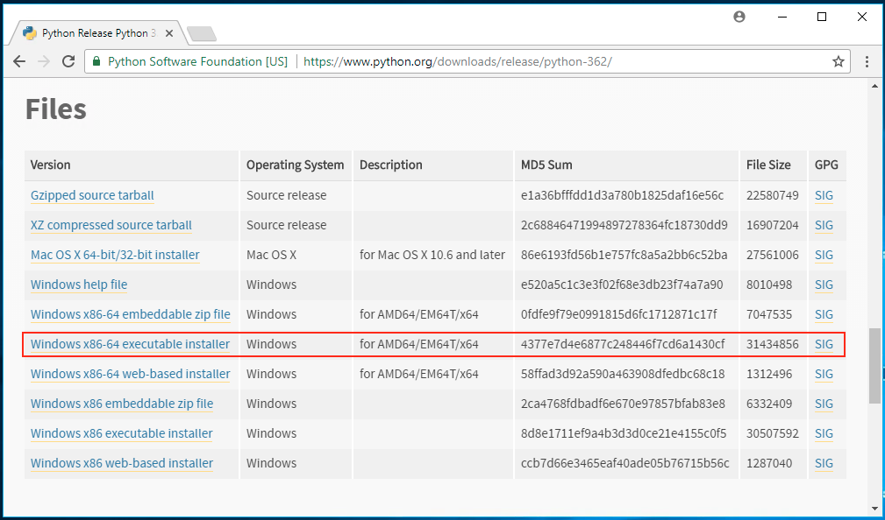
Pick the right version accordingly to your Windows distribution. If you are not sure which one is the right for you, the chances are you want to download the Windows x86-64 executable installer version.
Go to your Downloads directory, right click on the installer and click on Run as administrator.
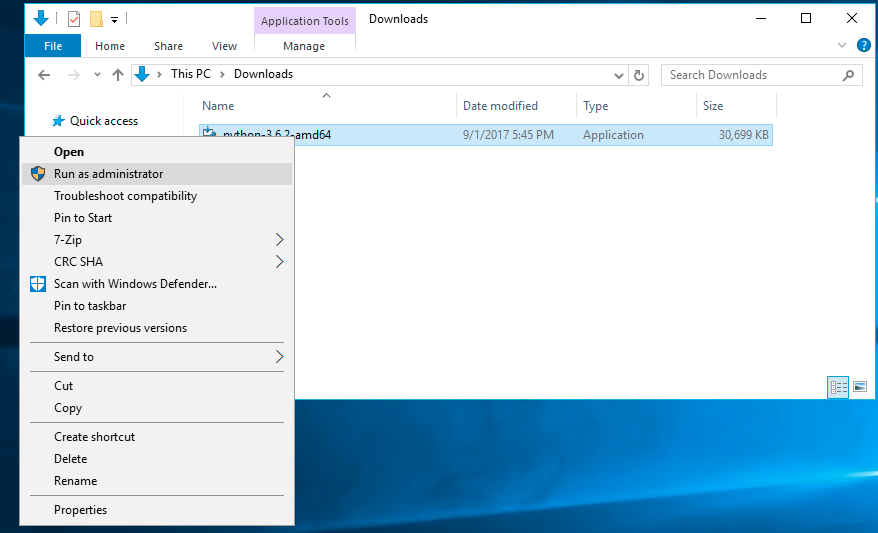
Make sure you check the option Add Python 3.6 to PATH and click on the Install Now option.
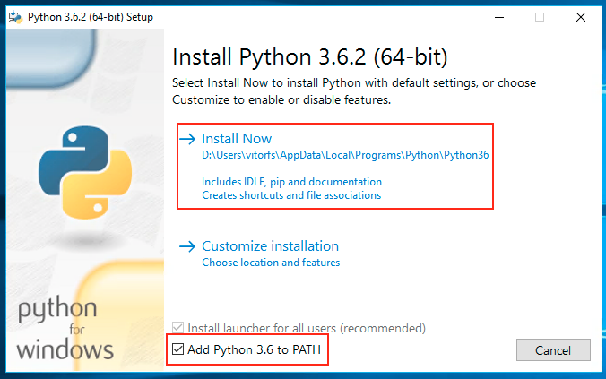
After the installation completes, you should see the following screen:
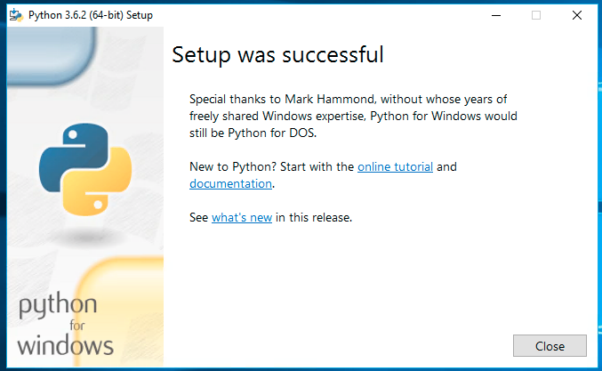
Now search for the Command Prompt program and open it:
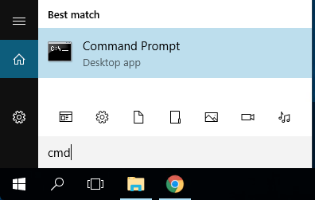
To test if everything is working fine so far, type following command:
python --versionAs an output you should see:
Python 3.6.2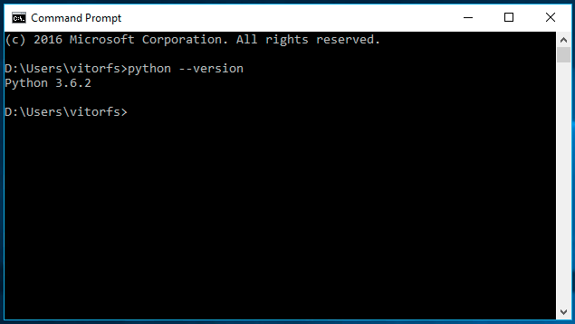
For this tutorial, I will be using Ubuntu 16.04 as an example. Ubuntu 16.04 already comes with both Python 2 (available
as python), and Python 3 (available as python3) installed. We can test the installation by opening the Terminal
and checking the versions:
python --version
Python 2.7.12
python3 --version
Python 3.5.2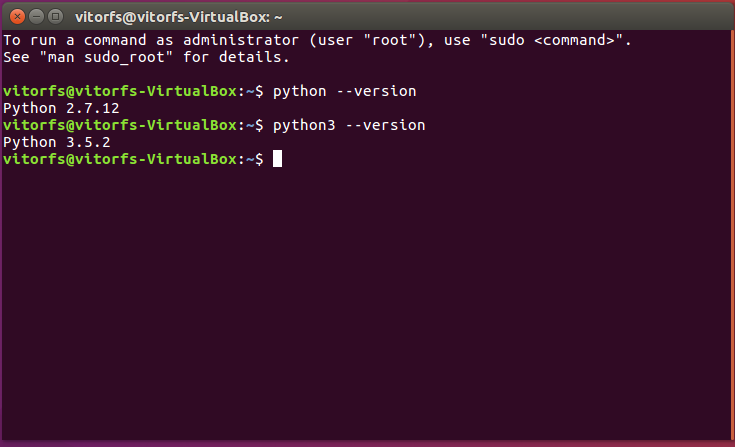
So all we have to do is install a newer Python 3 version. But we don’t want to mess with the current Python 3.5.2, as
the OS makes use of it. We’re simply going to install Python 3.6.2 under the name python3.6 and let the older version
be.
If you are using Ubuntu 16.04 or an older version, first add the following repository:
sudo add-apt-repository ppa:deadsnakes/ppaIf you are using Ubuntu 16.10, 17.04 or 17.10 you don’t need to perform the step above.
Now everyone executes the following commands to install the latest Python 3 distribution:
sudo apt-get update
sudo apt-get install python3.6The new installation will be available under python3.6, which is fine:
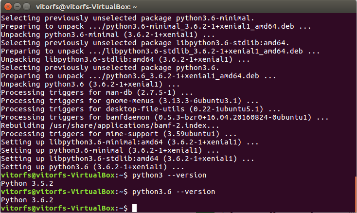
Great, Python is up and running. Next step: Virtual Environments!
Installing Virtualenv
For the next step, we are going to use pip, a tool to manage and install Python packages, to install virtualenv.
Note that Homebrew already installed pip for you under the name pip3 for your Python 3.6.2 installation.
In the Terminal, execute the command below:
sudo pip3 install virtualenv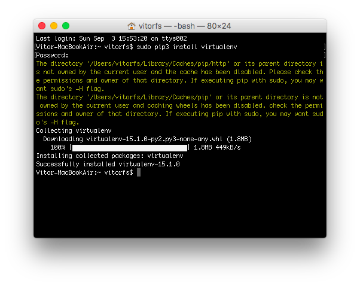
In the Command Prompt, execute the command below:
pip install virtualenv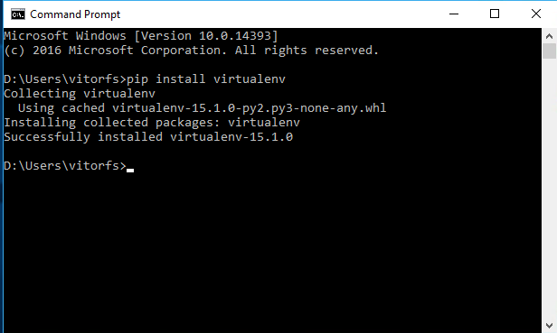
First let’s install pip for our Python 3.6.2 version:
wget https://bootstrap.pypa.io/get-pip.py
sudo python3.6 get-pip.pyNow we can install virtualenv:
sudo pip3.6 install virtualenv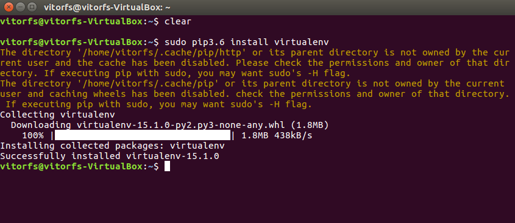
So far the installations that we performed was system-wide. From now on, everything we install, including Django itself, will be installed inside a Virtual Environment.
Think of it like this: for each Django project you start, you will first create a Virtual Environment for it. It’s like having a sandbox for each Django project. So you can play around, install packages, uninstall packages without breaking anything.
I like to create a folder named Development on my personal computer. Then, I use it to organize all my projects and websites. But you can follow the next steps creating the directories wherever it feels right for you.
Usually, I start by creating a new folder with the project name inside my Development folder. Since this is going to be our very first project, we don’t need to pick a fancy name or anything. For now, we can call it myproject.
mkdir myproject
cd myproject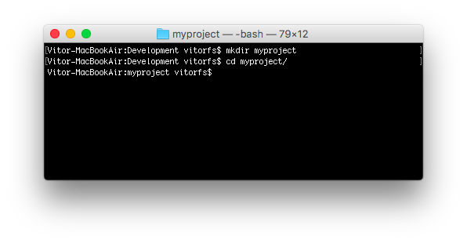
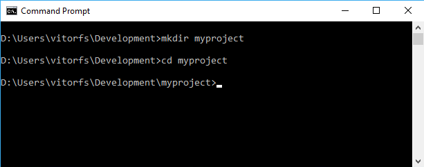
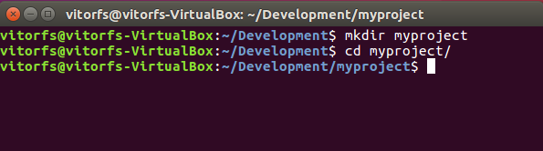
This folder is the higher level directory that will store all the files and things related to our Django project, including its virtual environment.
So let’s start by creating our very first virtual environment and installing Django.
Inside the myproject folder:
virtualenv venv -p python3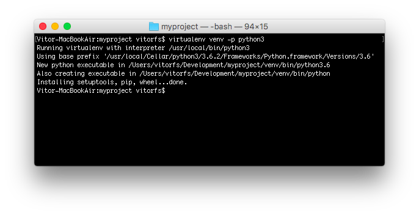
virtualenv venv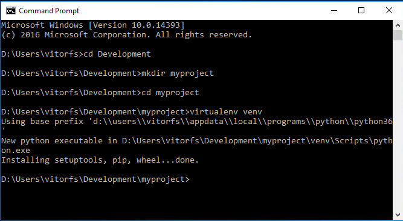
virtualenv venv -p python3.6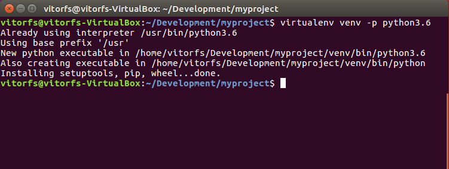
Our virtual environment is created. Now before we start using it, we need to activate:
source venv/bin/activatevenv\Scripts\activatesource venv/bin/activateYou will know it worked if you see (venv) in front of the command line, like this:
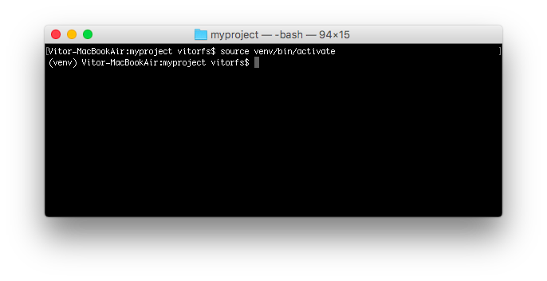
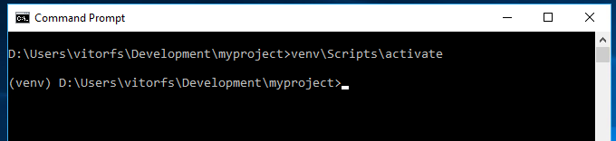
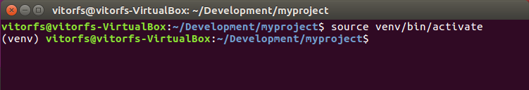
Let’s try to understand what happened here. We created a special folder named venv. It contains a copy
of Python inside this folder. After we activated the venv environment, when we run the python command, it will
use our local copy, stored inside venv, instead of the other one we installed earlier.
Another important thing is that the pip program is already installed as well, and when we use it to install a Python package, like Django, it will be installed inside the venv environment.
Note that when we have the venv activated, we will use the command python (instead of python3) to refer to
Python 3.6.2, and just pip (instead of pip3) to install packages.
Note that when we have the venv activated, we will use the command python (instead of python3.6) to refer to
Python 3.6.2, and just pip (instead of pip3.6) to install packages.
By the way, to deactivate the venv run the command below:
deactivatevenv\Scripts\deactivate.batdeactivateBut let’s keep it activated for the next steps.
Installing Django 1.11.4
It’s very straightforward. Now that we have the venv activated, run the following command to install Django:
pip install django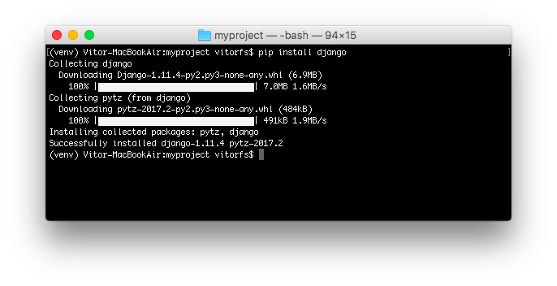
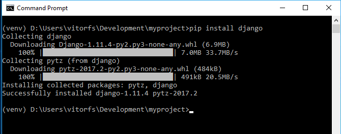
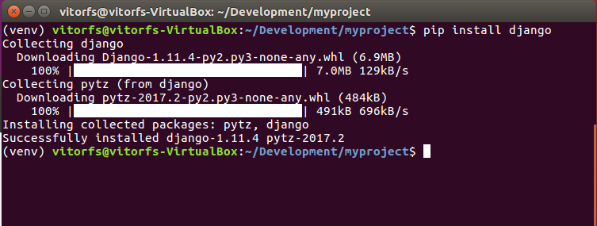
We are all set up now!
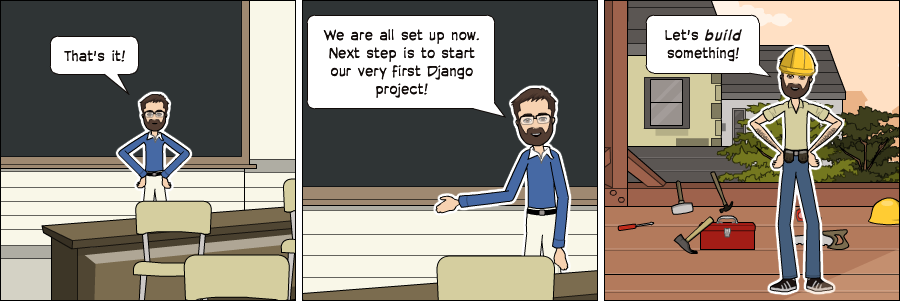
Starting a New Project
To start a new Django project, run the command below:
django-admin startproject myprojectThe command-line utility django-admin is automatically installed with Django.
After we run the command above, it will generate the base folder structure for a Django project.
Right now, our myproject directory looks like this:
myproject/ <-- higher level folder
|-- myproject/ <-- django project folder
| |-- myproject/
| | |-- __init__.py
| | |-- settings.py
| | |-- urls.py
| | |-- wsgi.py
| +-- manage.py
+-- venv/ <-- virtual environment folderOur initial project structure is composed of five files:
- manage.py: a shortcut to use the django-admin command-line utility. It’s used to run management commands related to our project. We will use it to run the development server, run tests, create migrations and much more.
- __init__.py: this empty file tells Python that this folder is a Python package.
- settings.py: this file contains all the project’s configuration. We will refer to this file all the time!
- urls.py: this file is responsible for mapping the routes and paths in our project. For example, if you want to
show something in the URL
/about/, you have to map it here first. - wsgi.py: this file is a simple gateway interface used for deployment. You don’t have to bother about it. Just let it be for now.
Django comes with a simple web server installed. It’s very convenient during the development, so we don’t have to install anything else to run the project locally. We can test it by executing the command:
python manage.py runserverFor now, you can ignore the migration errors; we will get to that later.
Now open the following URL in a Web browser: http://127.0.0.1:8000 and you should see the following page:
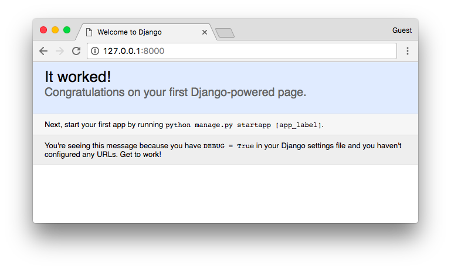
Hit Control + C to stop the development server.
Hit CTRL + BREAK to stop the development server.
Hit Control + C to stop the development server.
Django Apps
In the Django philosophy we have two important concepts:
- app: is a Web application that does something. An app usually is composed of a set of models (database tables), views, templates, tests.
- project: is a collection of configurations and apps. One project can be composed of multiple apps, or a single app.
It’s important to note that you can’t run a Django app without a project. Simple websites like a blog can be written entirely inside a single app, which could be named blog or weblog for example.
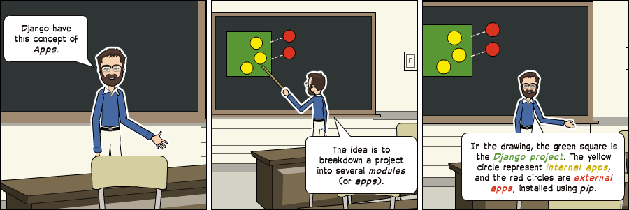
It’s a way to organize the source code. In the beginning, it’s not very trivial to determine what is an app or what is not. How to organize the code and so on. But don’t worry much about that right now! Let’s first get comfortable with Django’s API and the fundamentals.
Alright! So, to illustrate let’s create a simple Web Forum or Discussion Board. To create our first app, go to the directory where the manage.py file is and executes the following command:
django-admin startapp boardsNotice that we used the command startapp this time.
This will give us the following directory structure:
myproject/
|-- myproject/
| |-- boards/ <-- our new django app!
| | |-- migrations/
| | | +-- __init__.py
| | |-- __init__.py
| | |-- admin.py
| | |-- apps.py
| | |-- models.py
| | |-- tests.py
| | +-- views.py
| |-- myproject/
| | |-- __init__.py
| | |-- settings.py
| | |-- urls.py
| | |-- wsgi.py
| +-- manage.py
+-- venv/So, let’s first explore what each file does:
- migrations/: here Django store some files to keep track of the changes you create in the models.py file, so to keep the database and the models.py synchronized.
- admin.py: this is a configuration file for a built-in Django app called Django Admin.
- apps.py: this is a configuration file of the app itself.
- models.py: here is where we define the entities of our Web application. The models are translated automatically by Django into database tables.
- tests.py: this file is used to write unit tests for the app.
- views.py: this is the file where we handle the request/response cycle of our Web application.
Now that we created our first app, let’s configure our project to use it.
To do that, open the settings.py and try to find the INSTALLED_APPS variable:
settings.py
INSTALLED_APPS = [
'django.contrib.admin',
'django.contrib.auth',
'django.contrib.contenttypes',
'django.contrib.sessions',
'django.contrib.messages',
'django.contrib.staticfiles',
]As you can see, Django already come with 6 built-in apps installed. They offer common functionalities that most Web applications need, like authentication, sessions, static files management (images, javascripts, css, etc.) and so on.
We will explore those apps as we progress in this tutorial series. But for now, let them be and just add our boards
app to the list of INSTALLED_APPS:
INSTALLED_APPS = [
'django.contrib.admin',
'django.contrib.auth',
'django.contrib.contenttypes',
'django.contrib.sessions',
'django.contrib.messages',
'django.contrib.staticfiles',
'boards',
]Using the analogy of the square and circles from the previous comic, the yellow circle would be our boards app, and the django.contrib.admin, django.contrib.auth, etc, would be the red circles.
Hello, World!
Let’s write our first view. We will explore it in great detail in the next tutorial. But for now, let’s just experiment how it looks like to create a new page with Django.
Open the views.py file inside the boards app, and add the following code:
views.py
from django.http import HttpResponse
def home(request):
return HttpResponse('Hello, World!')Views are Python functions that receive an HttpRequest object and returns an HttpResponse object.
Receive a request as a parameter and returns a response as a result. That’s the flow you have to keep in mind!
So, here we defined a simple view called home which simply returns a message saying Hello, World!.
Now we have to tell Django when to serve this view. It’s done inside the urls.py file:
urls.py
from django.conf.urls import url
from django.contrib import admin
from boards import views
urlpatterns = [
url(r'^$', views.home, name='home'),
url(r'^admin/', admin.site.urls),
]If you compare the snippet above with your urls.py file, you will notice I added the following new line:
url(r'^$', views.home, name='home') and imported the views module from our app boards using from boards import views.
As I mentioned before, we will explore those concepts in great detail later on.
But for now, Django works with regex to match the requested URL. For our home view, I’m using the ^$ regex,
which will match an empty path, which is the homepage (this url: http://127.0.0.1:8000). If I wanted to match the URL
http://127.0.0.1:8000/homepage/, my url would be: url(r'^homepage/$', views.home, name='home').
Let’s see what happen:
python manage.py runserverIn a Web browser, open the http://127.0.0.1:8000 URL:
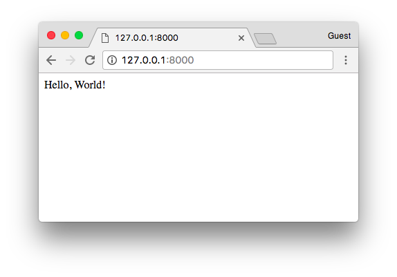
That’s it! You just created your very first view.
Conclusions
That was the first part of this tutorial series. In this tutorial, we learned how to install the latest Python version and how to setup the development environment. We also had an introduction to virtual environments and started our very first Django project and already created our initial app.
I hope you enjoyed the first part! The second part is coming out next week, on Sep 11, 2017. It’s going to be about models, views, templates, and URLs. We will explore together all the Django fundamentals! If you would like to get notified when the second part is out, you can subscribe to our mailing list.
Just so we can stay on the same page, I made the source code available on GitHub. The current state of the project can be found under the release tag v0.1-lw. The link below will take you to the right place:
https://github.com/sibtc/django-beginners-guide/tree/v0.1-lw


 How to Extend Django User Model
How to Extend Django User Model
 How to Setup a SSL Certificate on Nginx for a Django Application
How to Setup a SSL Certificate on Nginx for a Django Application
 How to Deploy a Django Application to Digital Ocean
How to Deploy a Django Application to Digital Ocean